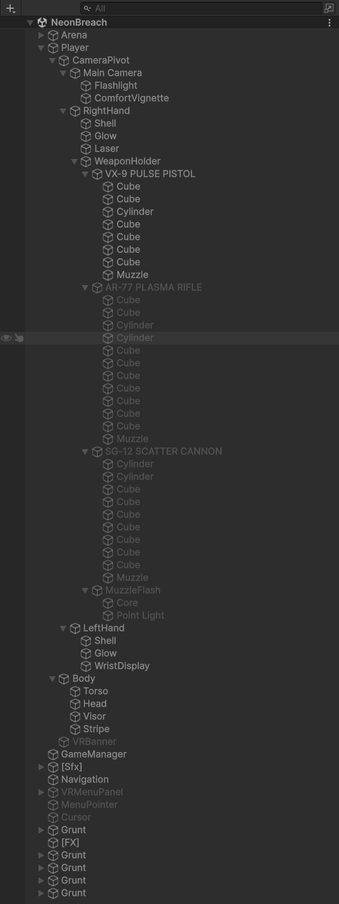
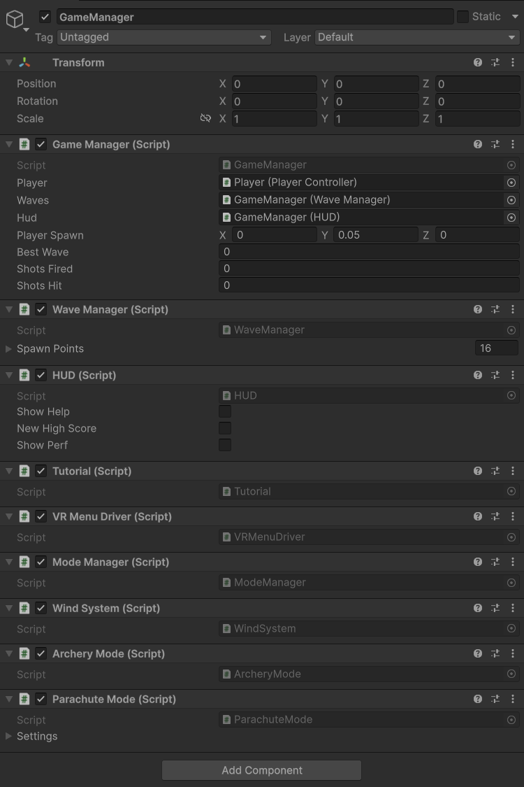
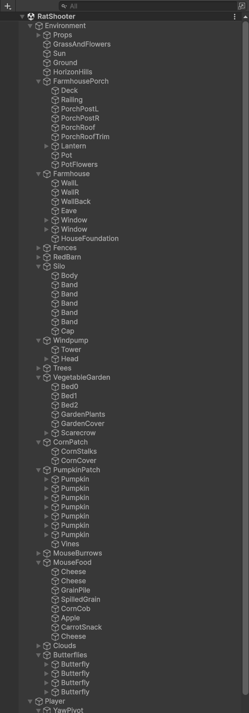
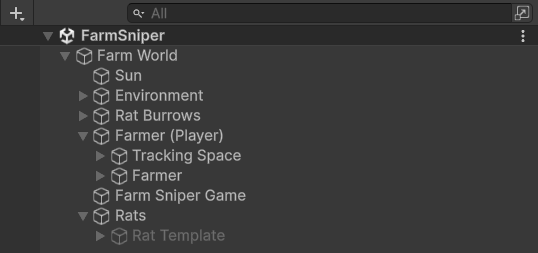

NEON BREACH uses Unity's component-based architecture: behaviour lives in MonoBehaviour components attached to GameObjects, and the engine calls them every frame. On top of this the project adds a layered architecture with strict dependencies. Input devices are at the bottom and feed one input model; gameplay systems read only that model; core services hold state, rules and persistence; world builders generate content; and presentation systems (HUD, VR UI, post-processing, audio, haptics) render the result. Each layer depends only on the layers below it, which is why a new input method (hand tracking) or a new mode (archery, parachute) could be added without changing the existing gameplay code.
flowchart TB
subgraph L1["1 · Input devices"]
direction TB
KBM["Keyboard + mouse
DesktopInput"]
PAD["Gamepad
GamepadInput"]
XRC["XR controllers
VRRig.Read"]
HND["Hand tracking
HandTracking"]
end
INP[["PlayerInputState
one per player, refilled every frame"]]
subgraph L2["2 · Gameplay"]
direction TB
PC["PlayerController"]
WS["WeaponSystem"]
MM["ModeManager
Archery · Parachute"]
WM["WaveManager
Enemy AI"]
TUT["Tutorial"]
end
subgraph L3["3 · Core services"]
direction TB
GM["GameManager
state machine"]
SET["GameSettings
KeyBindings · Loc"]
PRG["Progression
upgrades, power-ups"]
STA["Stats
leaderboard, analytics"]
end
subgraph L4["4 · World"]
direction TB
WB["WorldBuilder"]
AM["ArenaManager
runtime NavMesh"]
MR["MixedReality
room registration"]
end
subgraph L5["5 · Presentation"]
direction TB
HUD["HUD (IMGUI)"]
VRM["VRMenu, wrist display"]
PFX["PostFX"]
AUD["Sfx + BinauralFilter"]
HAP["Haptics, ComfortVignette"]
end
L1 ==> INP ==> L2
L2 <==> L3
L3 ==> L4 ==> L5
PlayerInputState; gameplay systems never query a device directly.The C# code is organised into three namespaces: NeonBreach for the main game, NeonBreach.RatShooter and NeonBreach.Farm. The main game is split into ten folders by responsibility ([[t-modules]]).
| Module (folder) | Scripts | Lines | Responsibility | Key types |
|---|---|---|---|---|
| Scripts/Core | 17 | 3,265 | Game state, settings, persistence, scoring, audio synthesis and playback, haptics, procedural textures/materials, profiling, automated test | GameManager, GameSettings, Stats, Sfx, BinauralFilter, Haptics, Perf |
| Scripts/Player | 6 | 1,236 | Locomotion, the input model and its desktop/gamepad readers, tutorial | PlayerController, PlayerInputState, DesktopInput |
| Scripts/Weapons | 4 | 1,088 | Firing, reloading, ADS, switching, grenades, impact effects | WeaponSystem, WeaponStats, Grenade, FX |
| Scripts/Enemies | 4 | 1,394 | Wave director, six enemy AIs, projectiles, pickups | WaveManager, Enemy, Pickup |
| Scripts/Modes | 11 | 4,433 | Mode switching, archery, parachute, wind, mode HUDs | ModeManager, MiniGame, ArcheryMode, ParachuteController |
| Scripts/UI | 4 | 1,523 | IMGUI HUD, menus, shop, game-over analytics | HUD (partial class) |
| Scripts/VR | 6 | 1,209 | Headset rig, hand tracking, comfort, VR menus, mixed reality | VRRig, HandTracking, MixedReality |
| Scripts/World | 4 | 627 | World generation, arena switching, runtime NavMesh, bootstrap | WorldBuilder, ArenaManager |
| Scripts/Rendering | 1 | 108 | Post-processing for the Built-in pipeline | PostFX |
| Scripts/Editor | 4 | 414 | Scene builder, first-open bootstrap, OpenXR set-up menu, instancing guard | SceneBuilder, ProjectMenu |
| RatShooter | 34 | 8,330 | Cartoon game: world, mice AI and rig, gun, HUD, audio, toon rendering, scene builder | RatShooterGame, MouseAI, MouseRig |
| FarmSniper | 28 | 7,192 | Sniper game: farm world, rats AI, rifle, HUD, VR rig, scene builder | FarmGameManager, SniperRifle, RatAI |
| Total | 123 | 30,808 | Plus 5 shaders (NB_PostFX, NB_Vignette, RatToon, RatSky, RatFX) and 3 scenes | |
[[f-class]] shows the main classes of the shared framework and how they relate. Three interfaces and one abstract base class keep the coupling low. IDamageable lets weapons damage enemies, players and training targets without knowing their types. IPlayerDriver lets a mode take over the player's movement (the parachute does this). The abstract MiniGame class gives every mini-game the same life cycle: Begin, Teardown and a result screen.
classDiagram
direction TB
class GameManager { +GameState State; +List~PlayerController~ Players; +ModeManager Modes; +StartGame(); +Pause(); +OpenShop(); +BeginModeRun(); +EndModeRun() }
class PlayerController { +PlayerInputState Inp; +WeaponSystem weapons; +VRRig vr; +IPlayerDriver Driver; +LookAt(); -FollowHead() }
class PlayerInputState { +move; +look; +snapTurn; +fireHeld; +aimHeld; +zoomHeld; +reloadPressed; +jumpPressed; +grenadePressed; +weaponSelect }
class VRRig { +RightHand; +LeftHand; +HandTracking Hands; +VRMenu Menu; +Read(state); -Track(node) }
class HandTracking { +HandState Left; +HandState Right }
class WeaponSystem { +Current; +AdsAmount; -Fire() }
class WaveManager { +Wave; +Remaining }
class Enemy { +EnemyType type; +TakeDamage(); -PathDir() }
class ModeManager { +Current; +SwitchTo(mode); +ReturnToShooter() }
class MiniGame { <> +Score; +Begin(player); +Teardown() }
class ArcheryMode
class ParachuteMode
class ParachuteController { +Phase State; +DrivePlayer() }
class IDamageable { <> +TakeDamage() }
class IPlayerDriver { <> +DrivePlayer() }
GameManager "1" o-- "1..2" PlayerController
GameManager o-- WaveManager
GameManager o-- ModeManager
PlayerController *-- PlayerInputState
PlayerController o-- WeaponSystem
PlayerController o-- VRRig
VRRig *-- HandTracking
VRRig ..> PlayerInputState : fills
WaveManager ..> Enemy : spawns
WeaponSystem ..> IDamageable : damages
Enemy ..|> IDamageable
PlayerController ..|> IDamageable
ModeManager o-- ArcheryMode
ModeManager o-- ParachuteMode
MiniGame <|-- ArcheryMode
MiniGame <|-- ParachuteMode
ParachuteMode *-- ParachuteController
ParachuteController ..|> IPlayerDriver
PlayerController ..> IPlayerDriver : delegates to
In VR, the order in which components run within one frame decides correctness: the hand pose must be read before input is translated, and input must be complete before weapons fire. The project fixes the order with Unity's [DefaultExecutionOrder] attribute ([[t-order]]). [[f-frame]] shows the resulting pipeline.
| Order | Component | Why it runs at this point |
|---|---|---|
| −100 | GameManager | Pause requests (Esc, gamepad Start, VR menu button), the F1/F3/F4/F12 hotkeys and state transitions, before anything reads the state |
| −90 | ModeManager | F5/F6/F7 mode hotkeys and mode switches, before players update |
| −70 | HandTracking | Reads the 26 joints per hand and detects gestures first |
| −60 | VRRig | Menu-button handling; its Read() is called by the player at −50 |
| −50 | PlayerController | Clears and refills PlayerInputState from all readers, then moves the player (or delegates to an IPlayerDriver) |
| −20 | WeaponSystem | Fires and reloads from the finished input |
| −10 | ArcheryMode, ParachuteMode | Mode logic after the input of this frame is known |
| 0 | Enemy, Arrow, HUD, others | World simulation; IMGUI is drawn in OnGUI |
| LateUpdate | VRRig, ComfortVignette, BinauralFilter | Apply the latest tracked poses to the camera and hands, then update the vignette and the audio cue parameters |
| Render | PostFX.OnRenderImage | Bloom, tone mapping and grading on the final image (desktop) |
sequenceDiagram autonumber participant XR as OpenXR runtime participant HT as HandTracking (-70) participant PC as PlayerController (-50) participant RIG as VRRig participant WS as WeaponSystem (-20) participant W as Enemies / Modes (0) participant LU as LateUpdate + render XR->>HT: joint poses (XRHandSubsystem) HT->>HT: pinch / palm gestures PC->>PC: Inp.Clear() PC->>RIG: DesktopInput / GamepadInput / vr.Read(Inp) RIG-->>PC: buttons, sticks, gestures PC->>PC: look, move (or Driver.DrivePlayer) WS->>WS: fire / reload from Inp W->>W: AI, physics, scoring LU->>XR: Track(CenterEye, hands) then submit frame
flowchart LR
subgraph R["Readers"]
direction TB
D["DesktopInput.Read
keys via KeyBindings"]
G["GamepadInput.Read
P1, or P2 in co-op"]
V["VRRig.Read
CommonUsages buttons and sticks"]
H["HandTracking
pinch / open palm"]
end
S[["PlayerInputState
move · look · snapTurn
fire · aim · zoom · reload
jump · dash · sprint · crouch
grenade · melee · flashlight
medkit · weaponSelect"]]
D --> S
G --> S
V --> S
H --> V
S --> C1["PlayerController
locomotion"]
S --> C2["WeaponSystem"]
S --> C3["ArcheryMode
draw, release, zoom"]
S --> C4["ParachuteController
jump, dive, ripcord, flare"]
S --> C5["Tutorial
step detection"]
GameManager holds a finite-state machine with five states (enum GameState { Menu, Playing, Paused, Shop, GameOver }). The mini-game modes reuse it: BeginModeRun() enters Playing and EndModeRun() enters GameOver, which shows the mode's results screen.
stateDiagram-v2 [*] --> Menu Menu --> Playing: Start mission / Tutorial Menu --> Playing: Archery or Parachute (BeginModeRun) Playing --> Paused: Esc / Start / menu button Paused --> Playing: Resume, Restart or Switch mode Paused --> Menu: Main menu Playing --> Shop: wave cleared Shop --> Playing: Continue (next wave) Playing --> GameOver: all players down Playing --> GameOver: mode run finished (EndModeRun) GameOver --> Playing: Retry / Play again GameOver --> Menu: Main menu
GameManager.The project has three scenes in Build Settings: NeonBreach.unity (index 0), FarmSniper.unity (1) and RatShooter.unity (2). [[f-scenes]] shows how the player moves between them. Scene changes to and from the Rat Shooter go through SceneFader, which fades the picture and the sound out, loads the scene asynchronously and fades back in.
flowchart TB
subgraph S0["NeonBreach.unity (build index 0)"]
direction LR
MENU(["Main menu"])
SH["Shooter
waves, shop, co-op"]
AR["Archery"]
PA["Parachute"]
TUT["Tutorial"]
OPT["Settings, leaderboard,
how to play"]
RES["Results / game over"]
MENU --> SH
MENU --> AR
MENU --> PA
MENU --> TUT
MENU --> OPT
TUT --> SH
SH --> RES
AR --> RES
PA --> RES
end
subgraph S2["RatShooter.unity (build index 2)"]
direction LR
RT(["Title"]) --> RC["Countdown"] --> RL["Levels 1-5"]
RL --> RLC["Level clear"]
RL --> RGO["Game over"]
RL --> RV["Victory"]
end
subgraph S1["FarmSniper.unity (build index 1)"]
direction LR
FT(["Title"]) --> FB["Briefing"] --> FP["Mission"]
FP --> FV["Mission complete"]
FP --> FF["Mission failed"]
end
S0 ==>|"RAT SHOOTER button (SceneFader)"| S2
S2 ==>|MAIN MENU| S0
S1 ==>|BACK TO NEON BREACH| S0
Switching modes inside one scene, rather than loading a new scene, keeps the player object, the VR rig, the settings and the audio system alive, which avoids reinitialising XR. The cost is that every mode must remove everything it created. ModeManager.SwitchTo ([[l-switch]]) enforces this order: tear down the active mode, hide the shooter world, begin a mode run, then let the new mode build its world.
sequenceDiagram autonumber actor P as Player participant UI as HUD / F5-F7 / VR menu participant MM as ModeManager participant OLD as Old mode participant GM as GameManager participant NEW as New mode P->>UI: Archery / Parachute / Switch mode UI->>MM: SwitchTo(mode) MM->>OLD: Teardown() Note over OLD: removes enemies, arrows,
rings, island, decals MM->>GM: BeginModeRun() MM->>NEW: Begin(player) Note over NEW: builds its world from code loop every frame NEW->>NEW: read input, simulate, score end NEW->>GM: EndModeRun() GM->>UI: results screen NEW->>MM: SubmitScore() per-mode best
The saved NeonBreach.unity scene is deliberately small: the generated Arena (84 child objects), the Player (CharacterController, PlayerController and VRRig) and the GameManager object, which hosts the manager components ([[f-hier]], [[f-insp-gm]]). Everything else is created at runtime. [[f-hier-runtime]] was captured in Play mode with the VR rig active: the rig has created the tracked RightHand (controller shell, laser and the weapon holder with all three weapons), the LeftHand with its WristDisplay, the ComfortVignette under the camera, and the VR menu objects, while ModeManager has added the archery and parachute components and the wave system has spawned enemies.



The Rat Shooter has its own scene with three roots: Environment (the generated farmyard), Player and RatShooterGame ([[f-hier-rat]]). [[f-rat-arch]] shows its components and [[f-rat-states]] its game states. The game reuses the shared DesktopInput, KeyBindings, GameSettings and NB_PostFX shader, but has its own HUD, audio synthesiser and toon shaders.
flowchart TB G["RatShooterGame
state, levels, score, combo, timer"] H["RatHUD (IMGUI)"] PL["RatShooterPlayer
smoothed aim, recoil, ADS"] GUN["CartoonGun
hitscan, 8-round magazine, reload"] SP["MouseSpawner
burrows, NavMesh, hiding spots"] AI["MouseAI
walk, run, idle, flee, hide, peek"] RIG["MouseRig
procedural animation"] VAR["MouseVariant x5"] FX["RatFX, RatSurface, ShellCasing"] AU["RatAudio, RatSynth"] G --> H G --> PL --> GUN GUN -->|onShot| G GUN --> FX GUN -->|gunshot noise| SP G --> SP --> AI --> RIG VAR --> AI G --> AU
stateDiagram-v2 [*] --> Title Title --> Countdown: Play Countdown --> Playing Playing --> Paused: Esc / P Paused --> Playing: Resume Playing --> LevelComplete: all mice caught LevelComplete --> Countdown: Next level Playing --> GameOver: time up / no ammo LevelComplete --> Victory: after level 5 GameOver --> Countdown: Retry / New game Victory --> Countdown: Play again
enum RatState).
flowchart TB FGM["FarmGameManager
title, briefing, mission, timer,
score, crop health, difficulty"] FP["FarmPlayer
move, 360° look, third person"] RF["SniperRifle
bolt action, 4x/8x/12x scope,
820 m/s simulated bullets"] RS["RatSpawner
burrows, live-rat cap, NavMesh"] RA["RatAI
roam, feed, flee, hide, escape"] CF["CropField"] HUDF["FarmHUD"] VR2["FarmVRRig, FarmVRPanel"] FGM --> FP --> RF RF -->|hit / miss| FGM RF -->|noise| RS FGM --> RS --> RA RA -->|eats| CF --> FGM FGM --> HUDF FP --> VR2
Title → Briefing → Playing ⇄ Paused → Victory | GameOver (enum FarmState).
All persistent data is stored with Unity's PlayerPrefs key–value store under the company "COEP Tech" and product "Neon Breach". Complex records (the leaderboard, lifetime statistics and the death map) are serialised to JSON strings with versioned keys, so that a future format can coexist with old data.
| Key(s) | Content |
|---|---|
nb_sens, nb_fov, nb_invy, nb_shake | Gameplay settings: mouse sensitivity, field of view, invert Y, screen-shake intensity |
nb_quality, nb_postfx, nb_bloom, nb_vsync, nb_fps | Graphics settings |
nb_vol, nb_music, nb_hrtf | Audio settings, including the binaural (HRTF) toggle |
nb_bind_0 … nb_bind_n | Rebound key for each game action |
nb_vr_vig, nb_vr_vigs, nb_vr_turn, nb_vr_snap, nb_vr_smooth, nb_vr_seated, nb_vr_hands, nb_vr_haptics, nb_vr_mr | VR comfort and feature settings (vignette and its strength, turn mode, snap angle, smooth-turn speed, seated mode, hand tracking, haptics, mixed reality) |
nb_lang, nb_name, nb_diff, nb_arena, nb_coop, nb_tut_done | Language, callsign, mission set-up and tutorial completion |
nb_high, nb_high_archery, nb_high_parachute, nb_high_rats, farm_best_0..2 | Per-mode high scores (Farm Sniper per difficulty) |
nb_board_v2, nb_lifetime_v1, nb_deaths_<arena> | Top-10 leaderboard, lifetime statistics and the death heat map (JSON) |
| Pattern | Where and why |
|---|---|
| Singleton / service locator | GameManager.Instance, ModeManager.Instance, WindSystem.Instance, RatShooterGame.Instance: one authoritative manager per scene |
| Adapter (input readers) | DesktopInput, GamepadInput, VRRig.Read and HandTracking convert device-specific input into PlayerInputState |
| Template method | The abstract MiniGame defines the life cycle; ArcheryMode and ParachuteMode fill in Begin, Teardown and the result rows |
| Strategy / delegation | IPlayerDriver lets the parachute replace the player's locomotion without changing PlayerController |
| State machine | GameState, RatState, FarmState, ParachuteController.Phase, the archery phases and the per-enemy AI states |
| Observer | CartoonGun.onShot events; mice react to relayed gunshot noise |
| Object pool / cache | Sfx pools 32 audio sources; Mats and ProcTex cache one material and texture per name |
| Builder | WorldBuilder, RatWorldBuilder and FarmWorldBuilder assemble whole levels from primitives; the editor builders save the result |
| Partial class | HUD is split across HUD.cs, HUDMenus.cs, HUDShop.cs, HUDGameOver.cs and HUDModes.cs |